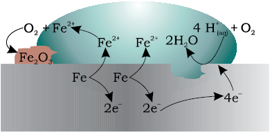
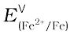
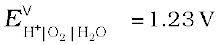
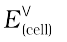

Corrosion slowly coats the surfaces of metallic objects with oxides or other salts of the metal. The rusting of iron, tarnishing of silver, development of green coating on copper and bronze are some of the examples of corrosion. It causes enormous damage to buildings, bridges, ships and to all objects made of metals especially that of iron. We lose crores of rupees every year on account of corrosion.
In corrosion, a metal is oxidised by loss of electrons to oxygen and formation of oxides. Corrosion of iron (commonly known as rusting) occurs in presence of water and air. The chemistry of corrosion is quite complex but it may be considered essentially as an electrochemical phenomenon. At a particular spot (Fig. 3.13) of an object made of iron, oxidation takes place and that spot behaves as anode and we can write the reaction
Anode: 2 Fe (s) → 2 Fe2+ + 4 e–  = – 0.44 V
Electrons released at anodic spot move through the metal and go to another spot on the metal and reduce oxygen in presence of H+ (which is believed to be available from H2CO3 formed due to dissolution of carbon dioxide from air into water. Hydrogen ion in water may also be available due to dissolution of other acidic oxides from the atmosphere). This spot behaves as cathode with the reaction
Cathode: O2(g) + 4 H+(aq) + 4 e– → 2 H2O (l) 
The overall reaction being:
2Fe(s) + O2(g) + 4H+(aq) → 2Fe2 +(aq) + 2 H2O (l) =1.67 V
The ferrous ions are further oxidised by atmospheric oxygen to ferric ions which come out as rust in the form of hydrated ferric oxide (Fe2O3. x H2O) and with further production of hydrogen ions.
Prevention of corrosion is of prime importance. It not only saves money but also helps in preventing accidents such as a bridge collapse or failure of a key component due to corrosion. One of the simplest methods of preventing corrosion is to prevent the surface of the metallic object to come in contact with atmosphere. This can be done by covering the surface with paint or by some chemicals (e.g. bisphenol). Another simple method is to cover the surface by other metals (Sn, Zn, etc.) that are inert or react to save the object. An electrochemical method is to provide a sacrificial electrode of another metal (like Mg, Zn, etc.) which corrodes itself but saves the object.
The Hydrogen Economy
At present the main source of energy that is driving our economy is fossil fuels such as coal, oil and gas. As more people on the planet aspire to improve their standard of living, their energy requirement will increase. In fact, the per capita consumption of energy used is a measure of development. Of course, it is assumed that energy is used for productive purpose and not merely wasted. We are already aware that carbon dioxide produced by the combustion of fossil fuels is resulting in the ‘Greenhouse Effect’. This is leading to a rise in the temperature of the Earth’s surface, causing polar ice to melt and ocean levels to rise. This will flood low-lying areas along the coast and some island nations such as Maldives face total submergence. In order to avoid such a catastrope, we need to limit our use of carbonaceous fuels. Hydrogen provides an ideal alternative as its combustion results in water only. Hydrogen production must come from splitting water using solar energy. Therefore, hydrogen can be used as a renewable and non polluting source of energy. This is the vision of the Hydrogen Economy. Both the production of hydrogen by electrolysis of water and hydrogen combustion in a fuel cell will be important in the future. And both these technologies are based on electrochemical principles.